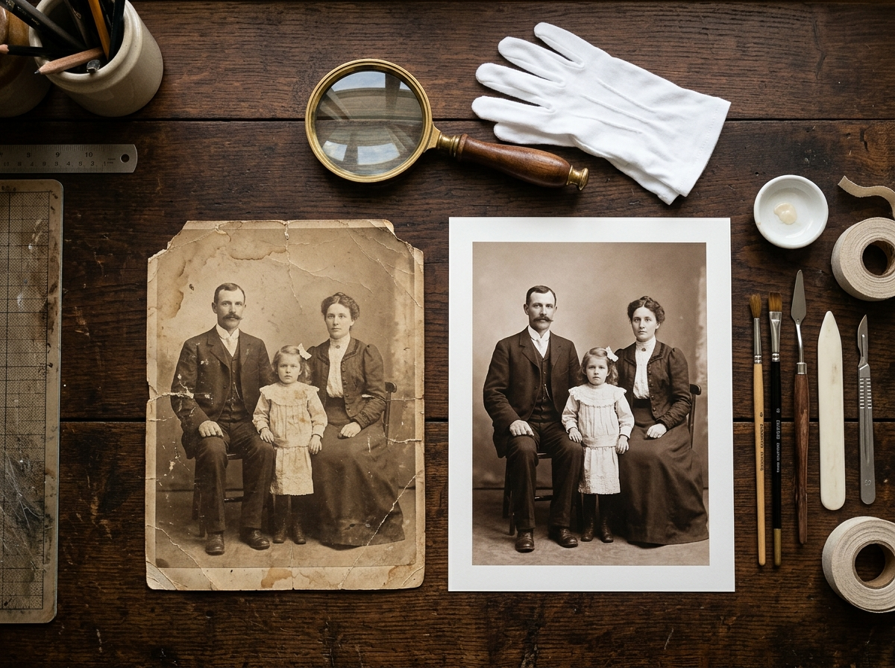
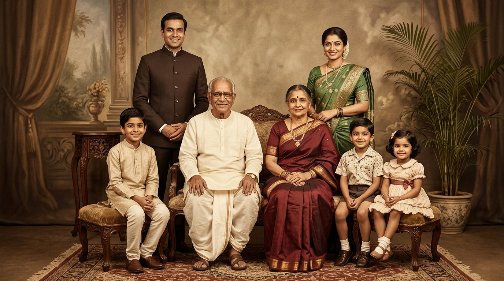
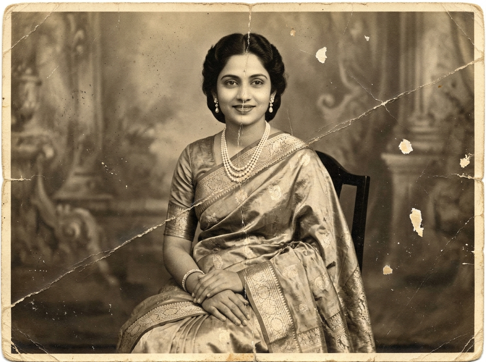
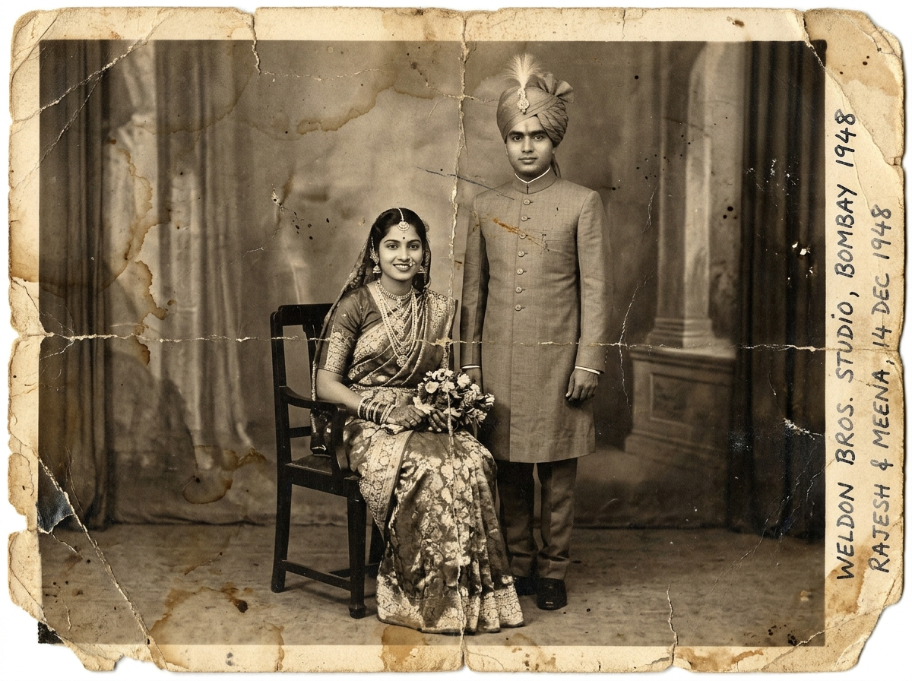
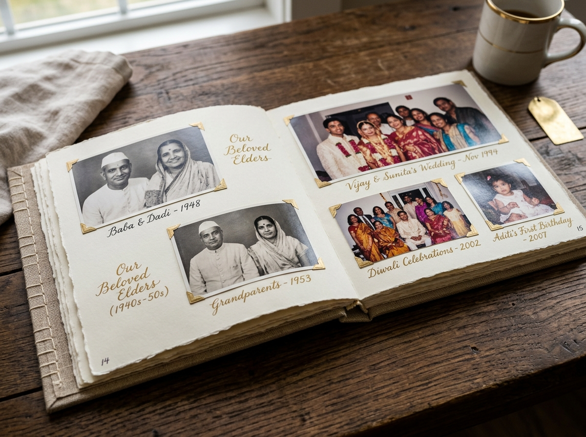
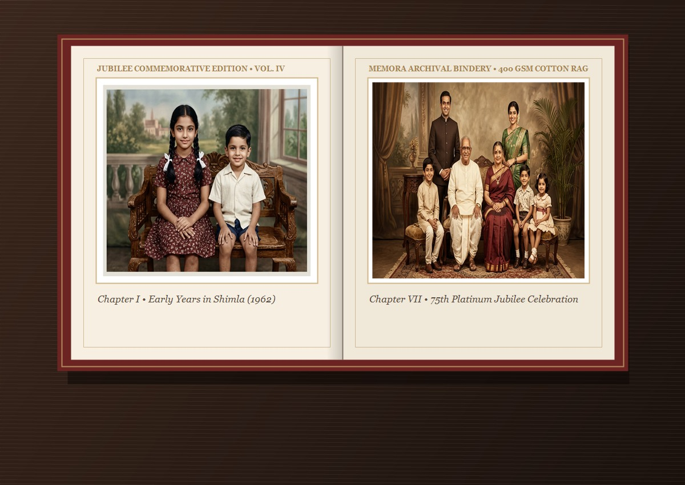
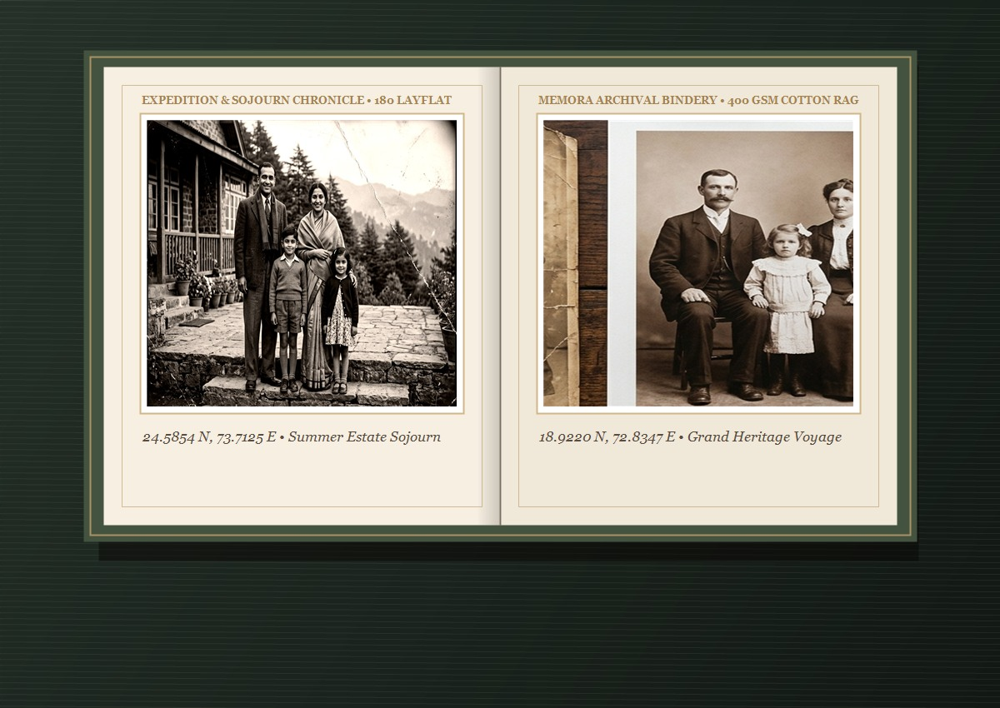
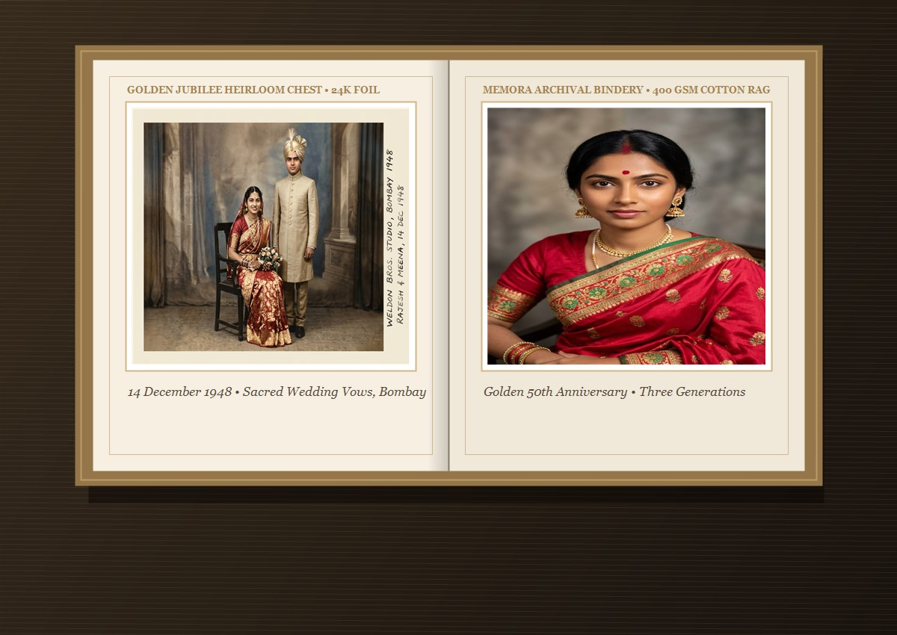

01 / ARCHIVAL RESTORATION

Old Photo Restoration
Revive faded daguerreotypes, cabinet cards, silver gelatin prints, and vintage Polaroids by recovering shadow depth and tonal richness.
From torn sepia portraits in your grandmother’s trunk to faded wedding negatives—our master digital conservationists restore lost details by hand and bind your family’s legacy into museum-grade heirloom albums.
48,500+
Heirlooms Restored
100% Hand
Pixel Conservation
4.98 / 5★
Family Trust Score

The Chatterjee Family Reunion, Calcutta (1954)
Torn silver gelatin print • Reconstructed & tonally balanced

Sepia Plate • 1946
Zero AI Plastic Skin
Likeness 100% Preserved
Drag the golden archival divider across the photograph to compare the damaged, faded original plate with our hand-restored master print.
 After • Master Restored
After • Master Restored

Before • Damaged OriginalOriginal print suffered from 70 years of monsoon humidity, deep diagonal folding creases, and sepia chemical yellowing. Restored in 18 hours.
We reject automated one-click filters. Every photograph is assigned to a dedicated specialist trained in historical photographic emulsions, portrait anatomy, and fine-art retouching.

Revive faded daguerreotypes, cabinet cards, silver gelatin prints, and vintage Polaroids by recovering shadow depth and tonal richness.

Multi-layer hand colorization guided by historical textiles, jewelry, regional lighting, and authentic family anecdotes.

Seamless stitching of ripped halves, removal of mold spores, ink marks, tape residue, foxing stains, and fire singes.

Delicate optical sharpening of blurred eyes, eyelashes, and expressions while respecting authentic facial bone structure and likeness.

Recreate missing corners, replace distracting backgrounds with classical studio drapery, or merge separated loved ones into one portrait.

Turn tiny stamp-sized passport photos or low-resolution scans into wall-sized museum canvas prints with natural film grain.
Digitized memories deserve a tangible home. Each volume is hand-stitched using 180° layflat archival cotton rag paper, Belgian linen, or full-grain Italian leather.

24k gold foil monogramming, seamless panoramic layflat spreads, and velvet-lined wooden presentation chests.

Curated storytelling volumes combining restored vintage portraits with contemporary family gatherings.

Includes fold-out calligraphic family trees, digitized letters, and historical archival captions.

The ultimate emotional gift featuring decades of restored childhood memories and handwritten guest tributes.

Magazine-grade layouts with custom coordinates, stamped archival maps, and seamless panoramic spreads.

Celebrate Silver and Golden Jubilees by weaving restored courtship portraits with family tributes in silk & calfskin.
Whether you upload a smartphone scan from home or courier fragile physical prints to our Mumbai conservation vault, you remain in complete control at every stage.

Upload high-resolution scans or phone photos directly via our encrypted portal, or request insured white-glove pickup for delicate physical prints and negatives.
Specify whether you desire authentic monochrome preservation, historical colorization, tear reconstruction, background removal, or bespoke album binding.
Our senior restoration artists work at 400% magnification using pressure-sensitive styluses to heal scratches, rebuild missing facial features, and balance tones.
Review your side-by-side Before & After proof inside your Customer Dashboard. Request unlimited fine-tuning revisions until every detail feels emotionally true.
Download master uncompressed TIFF & JPEG archives immediately, and receive your framed museum prints or handcrafted leather albums at your doorstep.
Nothing compares to the moment an 85-year-old parent sees their childhood home or late spouse in vivid, living clarity once again.
“We only had one torn, water-stained photograph of my Nani’s wedding in Lahore before Partition. When MEMORA revealed the restored portrait at my mother’s 75th birthday, the entire room wept.”

New Delhi • Complex Restoration + Heritage Frame
“They digitized 140 fragile glass-plate negatives from our ancestral home in Cochin and bound them into an Italian leather Heritage Album with Malayalam and English annotations. Pure museum artistry.”

Kochi • Custom Heritage Album Commission
“I had tried three online AI apps before finding MEMORA—they all made my late father look like a stranger. MEMORA’s human artists preserved his exact smile and matched his Air Force uniform colors to perfection.”

Pune • B&W Colorization & Upscaling
Upload your photograph for a complimentary archival condition assessment, or send our curators a quick message below.

Direct Conservation Line
+91 22 6789 4321
concierge@memorastudio.in
Flagship Atelier
Suite 402, Kala Ghoda Heritage Precinct, Fort, Mumbai 400001
Receive a personalized estimate and turnaround timeline within 2 hours.